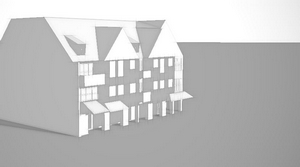
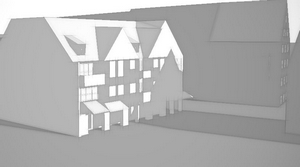
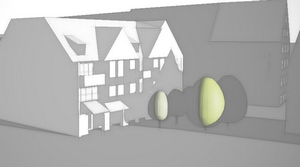
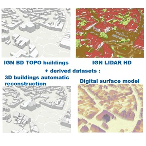
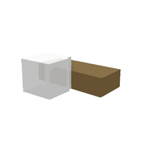
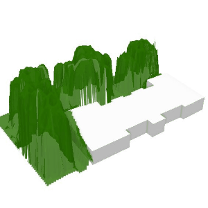
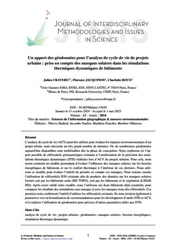
Julien Cravero, Charlotte Roux, Florence Jacquinod, Un apport des géodonnées pour l'analyse de cycle de vie de projets urbains : prise en compte des masques solaires dans les simulations thermiques dynamiques de bâtiments. Journal of Interdisciplinary Methodologies and Issues in Science, vol. 12 - Sciences de l’information géographique & mesures environnementales, 2024 Open Access on HAL
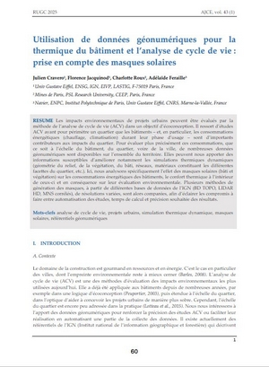
Julien Cravero, Florence Jacquinod, Charlotte Roux, Adélaïde Feraille, Utilisation de données géonumériques pour la thermique du bâtiment et l’analyse de cycle de vie : prise en compte des masques solaires, Academic Journal of Civil Engineering, volume 43, Numéro 1, Special Issue RUGC 2025, Online version available
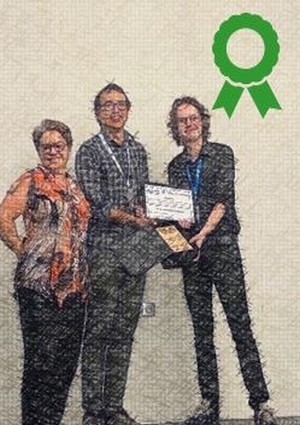
Our project has received the award for Ecological Transition from the Civil Engineering Academic Association !
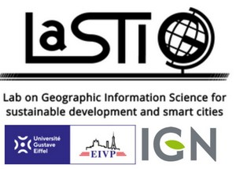
UMR Lastig - Lab on Geographic Information Science for Sustainable Development and Smart Cities
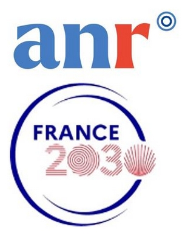